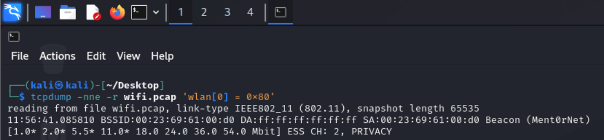
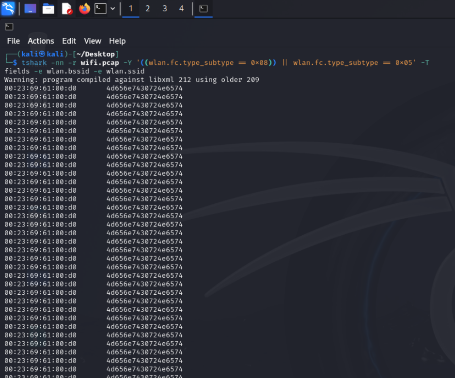
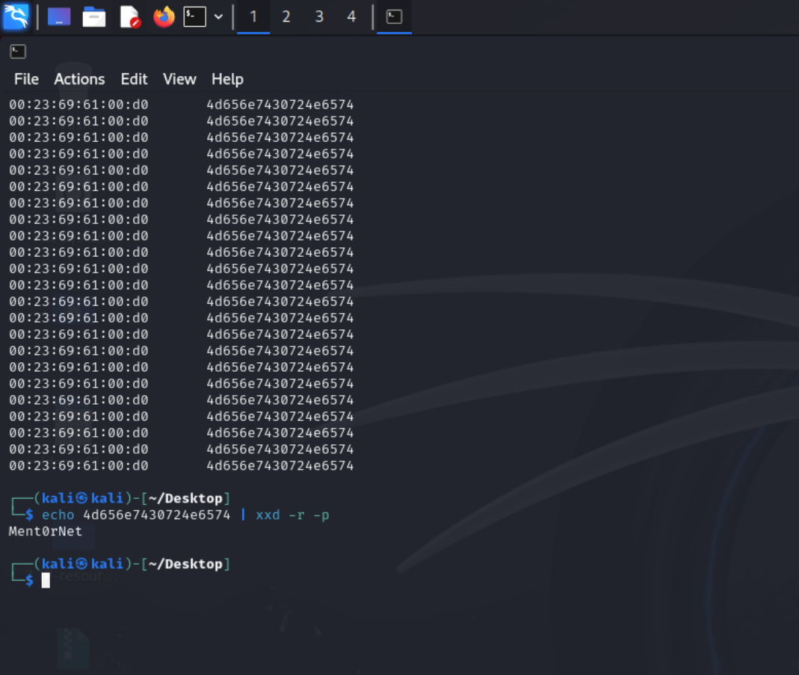

Have you ever opened your phone or laptop to connect to WiFi, and seen a list of network names appear? Names like "Coffee Shop WiFi" or "DavidsHotspot" or "HomeNetwork."
Have you ever wondered: Where do those names actually come from?
Here's the secret: Every few seconds, a device called a wireless access point (the box in your house that creates a WiFi network) shouts out a little message into the air. That message says: "Hello! I'm here! My name is blahblahblah! Come connect to me!". These shouts are called beacon frames.
They're invisible to human ears, but computers can hear them just fine.
In this article, we're going to listen to those signals. We will have an examination of a WiFi network that was attacked by someone malicious. The signals were captured for us to analyze (like a tape recording of the airwaves). Our job is to find two specific pieces of information from that recording:
1. The MAC address of the access point: think of this like a fingerprint or a serial number. Every WiFi device has a unique one.
2. The SSID: this is the fancy technical name for the human-readable network name you'd see on your phone (like "Starbucks WiFi").
We have no idea what the WiFi name is or its unique number. Yet!
Why Would Anyone Do This?
In the real world, digital detectives and security analysts need to find hidden or fake WiFi networks. Sometimes attackers set up evil "fake" WiFi hotspots to steal passwords. Being able to read beacon frames helps you spot those fake WiFi hotspots and take them down to prevent cyber crime.
Plus, it's also just cool to see how this works.
Step 1: The Recording
We started with a file called wifi.pcap. This file is the recording of the real WiFi traffic that was attacked, someone captured it from the air using special tools. Think of it like a voice recorder left in a room, capturing everything that was said.
We didn't capture it ourselves. Someone gave it to us. Our job is to analyse it.
Step 2: The First Tool: tcpdump
To look inside the recording, we used a tool called tcpdump. It's a simple program that reads network recordings and shows you what's inside.
We ran this command:
tcpdump -nne -r wifi.pcap 'wlan[0]=0x80'
I know, I know. That looks scary, but here's what each part means in plain English:
1. tcpdump: Hey computer, run the tcpdump program.
2. -nne: Don't bother converting numbers to names, just show me the raw data.
3. -r wifi.pcap: Read from the file called wifi.pcap.
4. 'wlan[0]=0x80': Only show me beacon frames (the "I'm here!" messages).
When we ran this, the computer printed out several lines of information. Each line was one beacon frame, one shout from a WiFi access point.

Step 3: Reading What tcpdump Showed Us
Looking at the output, we saw a line that looked something like this (simplified version):
BSSID:00:23:69:61:00:d0 DA:ff:ff:ff:ff:ff:ff Beacon (Ment0rNet)
Let me translate:
1. BSSID:00:23:69:61:00:d0: This is the MAC address (the unique number) of the access point.
2. DA:ff:ff:ff:ff:ff:ff: This means "destination address = everyone" (broadcast to everyone).
3. Beacon (Ment0rNet): This is the network name (SSID); the access point is called "Ment0rNet."
Right there, in plain sight, we found both things we were looking for:
1. MAC address: 00:23:69:61:00:d0
2. Network name: Ment0rNet
Step 4: Double-Checking with a Second Tool: tshark
In detective work, you never trust just one source. So we used a second tool called tshark to confirm what we found.
tshark is like the command-line cousin of Wireshark (a popular network analysis program). It's more precise than tcpdump.
We ran this command:
tshark -nn -r wifi.pcap -Y '((wlan.fc.type_subtype == 0x08) || (wlan.fc.type_subtype == 0x05))' -T fields -e wlan.bssid -e wlan.ssid
Here's the plain English breakdown:
1. tshark: Run the tshark program.
2. -nn: Don't convert numbers to names.
3. -r wifi.pcap: Read from the file wifi.pcap.
4. -Y '...': Only show me beacon frames (0x08) and probe response frames (0x05).
5. -T fields -e wlan.bssid -e wlan.ssid: Just show me the MAC address and the network name. Nothing else.
This command gave us a much cleaner output, just two columns of data:
00:23:69:61:00:d0 4d656e7430724e6574

Step 5: What is 4d656e7430724e6574?
When we ran tshark, sometimes the network name showed up as a code or numbers instead of plain text. For example, instead of "Ment0rNet", we saw:
4d656e7430724e6574
That's called hexadecimal, a way computers represent text using numbers and letters. We translated it back to normal text using a tiny command:
echo 4d656e7430724e6574 | xxd -r -p
And it printed: Ment0rNet
So everything matched.

The Final Answers
After all this listening and double-checking, here's what we found hidden inside the WiFi recording:
1. The WiFi's unique number (MAC address): 00:23:69:61:00:d0
2. The WiFi's name (SSID): Ment0rNet
What Did We Learn?
This little exercise taught us a few important things:
1. WiFi networks announce themselves constantly using beacon frames. That's how your phone knows what networks are nearby.
2. WiFi signals are completely open, anyone with the right tools can listen to them. That's not a security flaw; it's just how WiFi was designed.
3. tcpdump is a great tool for quickly looking at network traffic. It's simple and fast.
4. tshark is more precise, it lets us pull out exactly the fields we want, nothing more.
5. Always double-check your findings with a second tool or method. That's the heart of digital forensics.